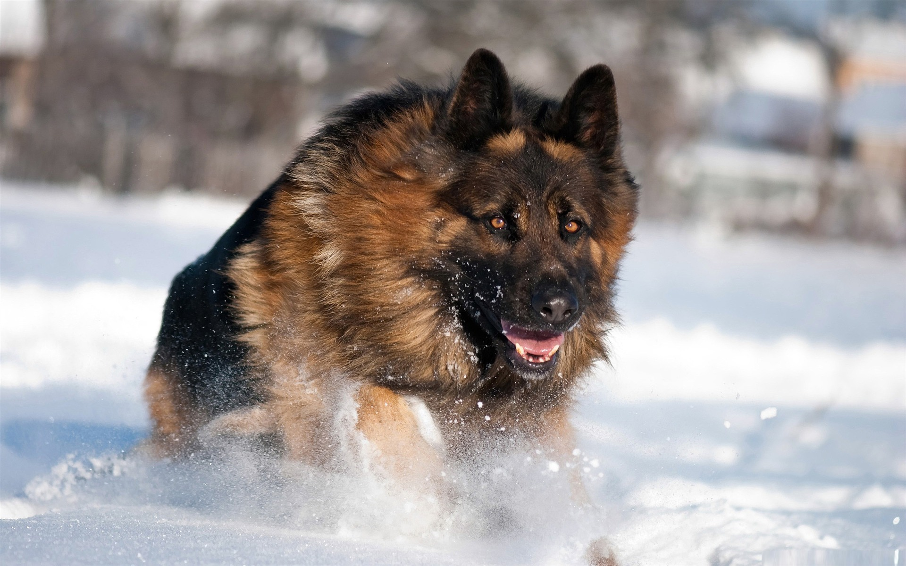

How long do german live for on average?
12 to 15 years
A: The average german lives anywhere from 12 to 15 years. Some have even been known to live until age 20! A.
There are two standard beagle sizes recognized by the American Kennel Club, the 13" and the 15". So-called 'mini'
beagles are not typical and are not recognized as part of the breed.
What is the oldest living german?

The oldest known Beagle was named Butch, who lived in Virginia and died at the ripe old age of 27 in 2009.Maltese. Females of this breed tend to live one year longer than their male counterparts, but all Maltese pups are expected to have long lifespans since they suffer from few serious genetic diseases. Cancer is a leading cause of death in older dogs. Your Beagle will likely live longer than many other breeds and therefore is more prone to get cancer in his golden years. ... X-rays taken of a dog with hip dysplasia.
What health problems do German shepherds have?
During the puppy stage, our beagle needs many grams of food. Therefore, it is not surprising that we give them more during the first months, compared to when they reach adulthood. In this sense, it is considered that the beagle has reached maturity once they surpass 12 months of life. Until then, we will have to buy dry feed from the junior range, manufactured exclusively to meet the needs of this breed of dog. The selected feed should contain a high percentage of proteins and nutrients. These will support their digestive system and ensure the correct development of their intestinal (or gut) flora. Also, it is important that essential minerals, like calcium and phosphorus are found in the composition. These minerals help the proper formation of your pup's skeleton and prevent problems with their joints. As they are active and energetic animals, they often suffer from diseases related to bones and joints. Keeping them in perfect condition from birth is fundamental to prevent these diseases. Finally, note that the feed contains antioxidants to help strengthen their immune system. We advise you to look for quality feed to provide your puppy with the best nutrition. Keep in mind that this is the most important stage of their life. This marks their evolution and development. So, you should avoid those brands that are predominantly flour and cereals. When you feed your beagle puppy, you must take into account the following considerations: To encourage feed intake during the first two months, it is advisable to moisten it in water to soften it. Then you will have to decrease the amount of water until the feed is completely dry. From 2 to 4 months we will ration the daily grams and we will give them in four shots. From 4 to 6, we will give them in three. At 6 months, we can now give them the daily total number of grams divided into two meals. Below you will find a beagle feeding guide presenting you with the total amount of grams you should feed your beagle a day. The figures take into consideration how old they are and the weight they will reach as an adult. In order to know the present and future weight of your beagle , you should consult your vet. You will observe that up to 6 months, the daily food amount fro your beagle will increase to cover all of its nutritional needs. From 6 months onward, you should reduce their food intake to avoid excessive weight gain and/or obesity.